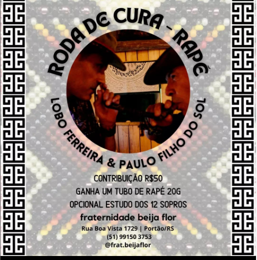

Roda de cura - Rapé
Lobo Ferreira & Paulo Filho do Sol
Sentiu esse chamado só conversar com o @loboferreiras e @paulofilhodosol
Fraternidade Beija Flor convida:
RODA DE CURA - RAPÉ
Data: 14/07- Quinta
Das 20hrs às 23hrs
Local Fraternidade Beija Flor| Portão